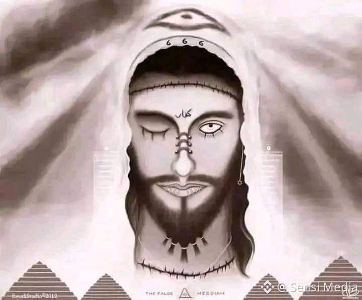

بِسْمِ اللهِ الرَّحْمَٰنِ الرَّحِيمِ
A Book of Wonders
Al-Masīḥ al-Dajjāl - The Deceiving Messiah
الْمَسِيحُ الدَّجَّال

Physical Description
Al-Dajjāl is a human being who will appear at the end of times. He will be short in stature, with curly and thick hair. He will be blind in his right eye, which is often described as a floating grape. His left eye will have a thick piece of white flesh growing at the edge. He is white in complexion, with a wide forehead. He will be unable to have any children. He will walk with his toes turned in and has a wide gap between his calves. Most distinctively, the word Kāfir (كَافِر), meaning disbeliever, is written between his eyes, and it is said that only the believers will be able to read it. (ʿArīfī, The End of the World, pp. 274–275).
Lore & Significance
He is called Maseeh (Messiah) because his left eye is "wiped" (mamsooh) or because he will "wipe" (yamsah) the earth by traveling through it rapidly. He is called Dajjaal because he uses trickery and fraud to deceive people. He will emerge when people's religious commitment is low, knowledge is disappearing, and even Imams have stopped mentioning him from the pulpit. The Dajjāl is a one-eyed human and monstrous figure who will lead a kingdom of terror and attempt to seduce believers away from Islam and into idolatry. He is the first and greatest major sign of the Day of Judgement and represents a very great فِتْنَة (fitnah, meaning tribulation) for the world.
He is said to emerge from a road in a land in the east called Khorasan, between Syria and Iraq, after three years of progressive famine. In the first year, God will command the sky to withhold a third of its rain; in the second, two-thirds; and in the third, all rain will cease. He will then offer food to the starving believers. This is a test for the believer, who must reject the Dajjāl's food and trust in God to provide for them. It is said that he will have with him a "garden" and a "fire." However, his garden is actually fire, and his fire is actually cool, sweet water. (ʿArīfī, The End of the World, pp. 273, 275–276.)
He will be followed by 70,000 Jews from Isfahan wearing shawl-like garments (tayaalisah) as they believe he is the Messiah they have been awaiting. The Dajjal will claim to be the "Lord of the Worlds," but the Prophet Muhammad (peace be upon him) warned that while the Dajjaāl is one-eyed, "your Lord is not one-eyed". He will seem to possess god-like powers, but will only be limited by what God allows him to do. He will appear to 'resurrect' a man's mother and father from the dead by commanding two devils to appear in their shape, deceiving those who witness it. The two devils will say, “O my son, follow him, for he is your Lord.” Fear of the Dajjal is used as a way to incentivize acts of worship. Memorizing the first ten verses of Sūrat al-Kahf is known to protect oneself against the Dajjal. Additionally, it is highly suggested to visit or live in Makkah or Madina because the Dajjal is unable to enter Makkah or Madīna. The Dajjāl will ultimately be slain by ʿĪsā ibn Maryam (Jesus, peace be upon him) (ʿArīfī, The End of the World, pp. 272-276.)
The Dajjāl can be interpreted as a metaphor for the temptations of life and its temporality. What he offers looks lavish but will eventually fade, leaving those who take his favors in a worse place. His existence pushes Muslims to retain their identity and protect themselves against those who deceive them by remaining doubtful. Being educated about him is the protection against him, so that one never ends up in a situation under his influence. His food, his false miracles, and his apparent power all represent the seductive yet hollow nature of worldly temptation and teach Muslims to stay steadfast on their path.